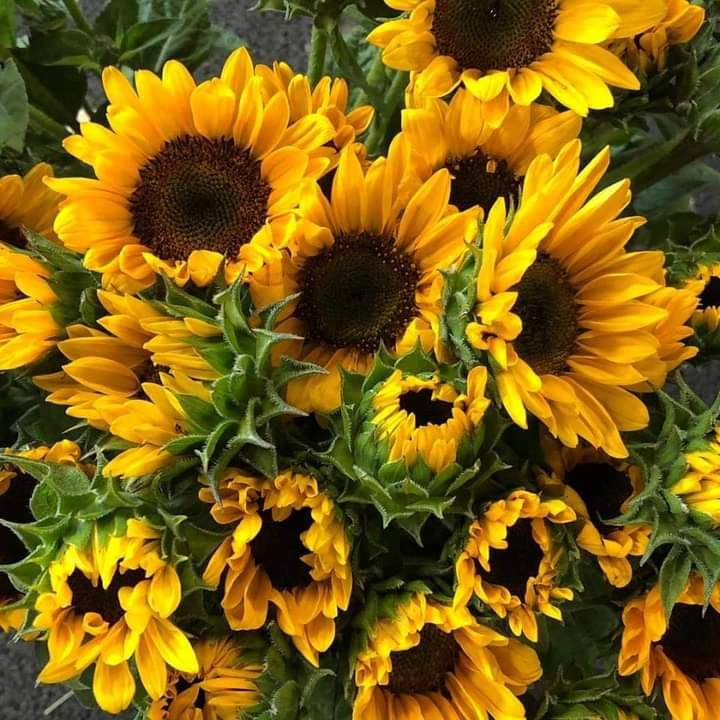
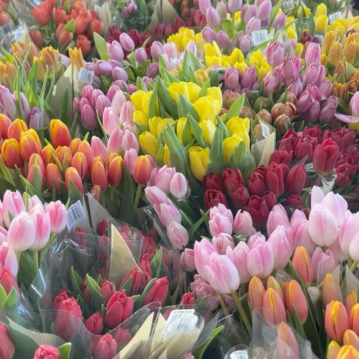
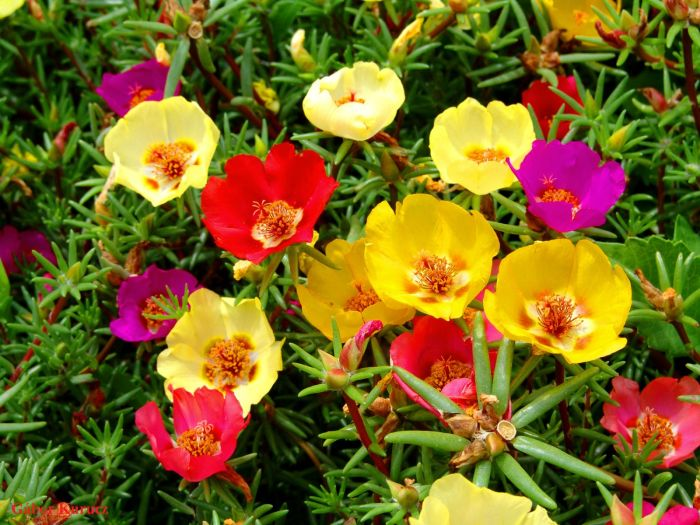

As Desenvolvedoras
Este projeto foi desenvolvido pelas alunas Giovana, Pâmella e Elena com o objetivo de apresentar informações e curiosidades sobre flores.
Giovana

Sua flor favorita é o girassol. Ele é fascinante: quando jovem, ele segue o sol e pode crescer até 3 metros em apenas 6 meses.
Pâmella

Sua flor favorita é a tulipa. Elas causaram a "Mania das Tulipas" no século XVII, sendo tão valiosas que um bulbo podia custar o preço de uma casa.
Elena

Sua flor favorita é o onze horas. é uma suculenta brasileira famosa por abrir suas flores coloridas durante o pico do sol, geralmente por volta das 11h da manhã, fechando à tarde.